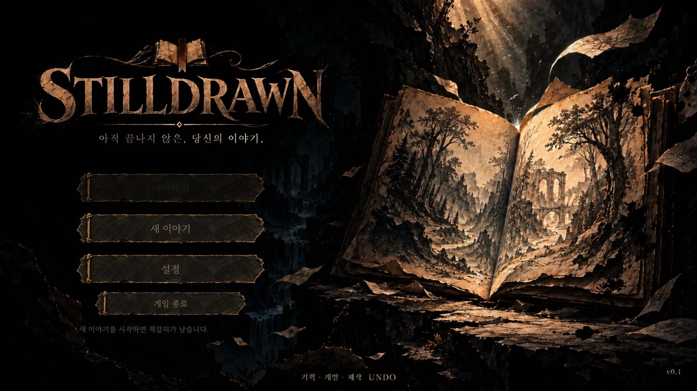
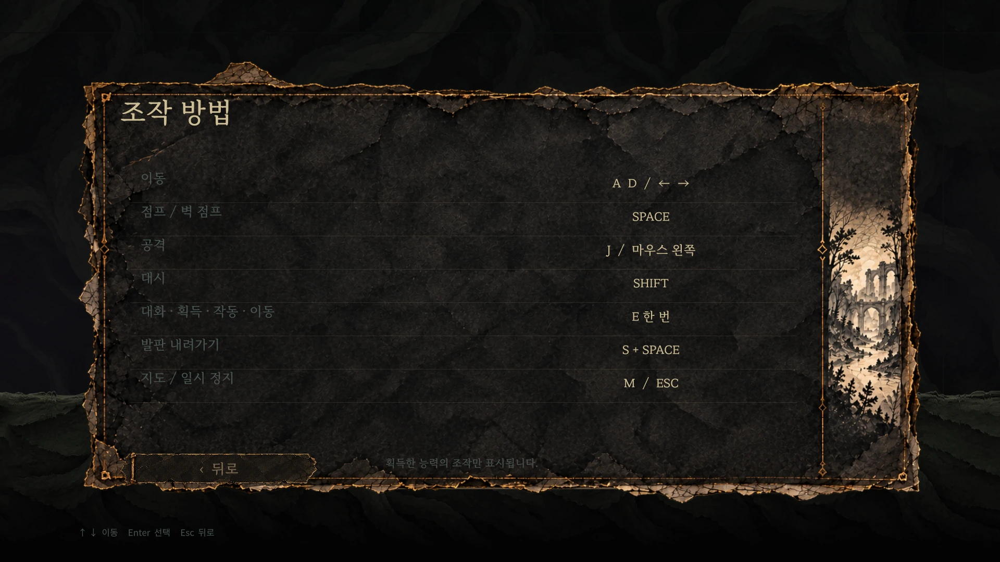

01
메이플키우기 · 팀 3인자동화 시연
무기 레벨업 자동화반복 실행 · 화면 인식
반복 클릭을, 검증 가능한 실행 흐름으로.
- 강화 버튼을 이미지로 탐지해 반복 클릭
- 강화 전후 재화를 OCR로 읽어 변화 확인
- 실행 과정과 판정 결과를 로그로 기록

PythonOpenCVPyAutoGUITesseract OCR
검증 과정 보기 게임의 규칙을 이해하고, 동작과 결과를 함께 확인합니다.
화면 인식 자동화와 실행 기록으로 검증 과정을 보여주는 이도언입니다.
무엇이 [정상]인지 먼저 정합니다. // 반복은 [자동화]하고, 결과는 [기록]합니다. // 예외 상황은 [재현할 근거]를 남깁니다.
메이플키우기 자동화 테스트 프로젝트의 네 가지 검증 흐름입니다. 각 사례에서 실제 실행 영상과 기록 방식을 확인하세요.
반복 클릭을, 검증 가능한 실행 흐름으로.
강화의 성공과, 테스트의 성공을 구분합니다.

클릭이 됐는지보다, 얼마가 차감됐는지.

예상 밖의 화면에서도, 원인을 남깁니다.

직접 참여한 프로젝트의 역할과 작업 화면을 모았습니다. 상세 화면에서는 게임 규칙과 사용자 흐름을 바탕으로 QA에서 살펴볼 지점도 확인할 수 있습니다.

제한된 하루 동안 지하에서 수집한 쓰레기를 분류해 수익을 만들고, 다음 탐색을 준비하는 게임입니다.
제한된 하루 동안 지하에서 수집한 쓰레기를 분류해 수익을 만들고, 다음 탐색을 준비하는 게임입니다.
가방이 가득 찬 상태에서 수집이나 투입을 시도할 때 보유량·대기열·정산 금액이 일치하는지 살펴볼 수 있습니다.


전진하는 전장에서 적을 막고 포탑과 증강을 선택해 전투 구성을 바꾸는 디펜스 게임입니다.
전진하는 전장에서 적을 막고 포탑과 증강을 선택해 전투 구성을 바꾸는 디펜스 게임입니다.
보스 공격 예고와 실제 피격 시점이 맞는지, 레벨업 선택 후 전투가 정상적으로 이어지는지 살펴볼 수 있습니다.



종이 세계를 탐색하고, 새 능력을 얻어 이전에 갈 수 없던 구역으로 돌아가는 메트로배니아입니다.
종이 세계를 탐색하고, 새 능력을 얻어 이전에 갈 수 없던 구역으로 돌아가는 메트로배니아입니다.
능력 획득 전후에 같은 지형의 통과 조건이 달라지는지, 재방문 때 지도와 수집 상태가 일치하는지 살펴볼 수 있습니다.




중력 방향을 바꿔 기록 상자를 목표 지점에 놓으며 책 속 공간을 탐험하는 3D 퍼즐입니다.
중력 방향을 바꿔 기록 상자를 목표 지점에 놓으며 책 속 공간을 탐험하는 3D 퍼즐입니다.
중력을 연속으로 전환할 때 상자가 벽에 멈추는 위치와 목표 판정이 일치하는지 살펴볼 수 있습니다.


덱을 편성한 뒤 유닛을 소환하고 강화해 웨이브와 보스를 상대하는 게임입니다.
덱을 편성한 뒤 유닛을 소환하고 강화해 웨이브와 보스를 상대하는 게임입니다.
소환·강화를 연속으로 선택했을 때 골드 차감과 유닛 상태가 일치하는지 살펴볼 수 있습니다.


한 번의 방향 입력으로 친구들을 함께 움직여 같은 색의 목표에 도착시키는 중력 퍼즐입니다.
한 번의 방향 입력으로 친구들을 함께 움직여 같은 색의 목표에 도착시키는 중력 퍼즐입니다.
포탈이나 크기 변환 후 되돌리기를 사용했을 때 위치·크기·클리어 판정이 함께 복원되는지 살펴볼 수 있습니다.


주사위로 보드를 이동하며 코인과 땅을 관리하는 실물 보드게임입니다.
주사위로 보드를 이동하며 코인과 땅을 관리하는 실물 보드게임입니다.
텔레포트로 도착한 칸의 처리 순서, 마지막 턴의 소유권과 승리 판정을 룰북과 대조할 수 있습니다.


출근 경로 탐색부터 이동 기록과 루틴 확인까지 연결한 모빌리티 앱 프로토타입입니다.
출근 경로 탐색부터 이동 기록과 루틴 확인까지 연결한 모빌리티 앱 프로토타입입니다.
경로 선택 → 기록 → 히스토리 흐름에서 같은 이동 정보가 일관되게 표시되는지 살펴볼 수 있습니다.
메이플키우기의 반복 성장 동작을 화면 인식으로 실행하고 결과를 로그로 검증한 팀 자동화 프로젝트입니다.
자동화 시연 4개 보기 →메이플키우기 자동화 사례를 바탕으로 정리한 테스트 설계 샘플입니다.
항목을 펼치면 사전 조건·절차·기대 결과·수집할 증거를 볼 수 있습니다.
8개 테스트 설계
설계 샘플의 실행 상태는 미기록입니다. 위 시연 영상의 결과나 실제 결함 보고서와 구분해 제시합니다.
버튼 탐지와 클릭, 전후 재화 비교, 강화 결과 확인, 예외 팝업 감시처럼 반복 가능하고 판정 기준을 세울 수 있는 흐름을 대상으로 합니다.
결제·광고의 사용자 경험, 네트워크 오류 안내와 복구 경험, 확률 결과의 해석은 별도 판단이 필요합니다. 자동 실행 결과와 사용자 관점의 확인을 함께 봅니다.
기능의 규칙과 사용자 흐름을 읽고 정상 동작의 기준을 정합니다. 자동화할 구간과 사람이 판단할 구간을 나눕니다.
정상·경계·예외 조건으로 나눕니다. 사전 상태, 실행 순서, 기대 결과와 필요한 증거를 구체화합니다.
반복 흐름을 실행하고 화면·수치·회차별 로그를 함께 남깁니다. 테스트 도구의 인식 실패와 게임의 결과를 구분합니다.
차이가 난 조건과 마지막 정상 상태를 좁힙니다. 수정 이후에는 같은 조건을 다시 실행하고 주변 흐름까지 확인합니다.